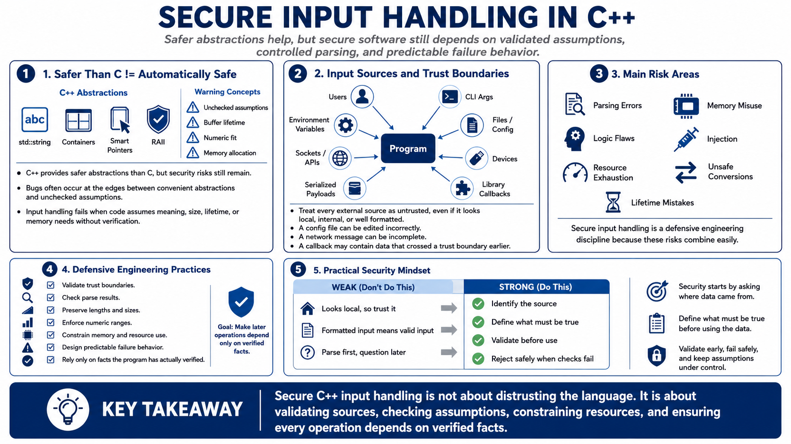

Why Input Handling Matters in C++
Connecting to LMS... Progress: in progress

Narration
C++ gives developers safer abstractions than C, but it does not make unsafe input handling disappear. A program can use std::string, containers, smart pointers, and RAII while still making dangerous assumptions about what input means, how long a referenced buffer remains valid, whether a number fits in a target type, or how much memory a parsed value should cause the program to allocate. Security failures often happen at those edges between convenient abstractions and unchecked assumptions.
Input can come from users, command-line arguments, environment variables, files, configuration, sockets, APIs, devices, serialized payloads, and library callbacks. None of these sources should be treated as trustworthy simply because they look local, internal, or well formatted. A configuration file can be edited incorrectly. A network message can be incomplete. A library callback can receive data that originally crossed a trust boundary earlier in the workflow. Secure code starts by asking where data came from and what must be true before the program relies on it.
The main risks include parsing errors, memory misuse, logic flaws, injection, resource exhaustion, unsafe conversions, and lifetime mistakes. Secure input handling in C++ is therefore a defensive engineering discipline. It means validating trust boundaries, checking parse results, preserving lengths, enforcing ranges, constraining resource use, and designing predictable failure behavior. The goal is not to distrust every line of code. The goal is to make sure every later operation depends on facts the program has actually verified.